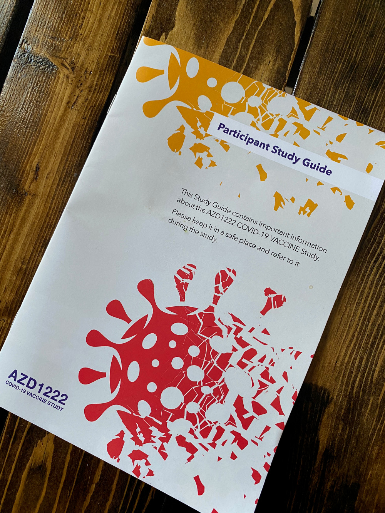

Several months ago this past summer, I signed up to be a participant in a COVID vaccine research study. I really saw no downsides, because by stage 3 trials, the vaccines are deemed pretty safe, and as an added benefit I would be helping the vaccine come to market while lowering my own risk of catching coronavirus if I received the vaccine. I didn’t think I would get picked because I work from home now and am pretty low-risk, but a few weeks ago I got a phone call that I was chosen to participate in the Oxford vaccine trial! I answered several medical-related questions over the phone and scheduled an appointment for the next afternoon.
When I arrived, I filled out some paperwork and was taken into a room where a woman asked me more questions and an epidemiologist took my vitals, three vials of blood, a covid test, and then I had to take a pregnancy test. Next, I had a physical examination with a doctor. She asked several more questions and then mostly just listened to my heart and lungs, asked if I had any nose or mouth problems, and pressed on my abdomen in several places. Then I waited in a separate room by myself for 10-15 minutes.
Next I went into the area where the injections were happening. I had to wait while the computer decided if I was in the placebo group or not. The study is double-blind, so both the person administering the injection and I don’t know what I received. I had a 66% chance of receiving the vaccine, and a 33% chance of receiving saline water as a placebo. When the person injected my arm, I felt no pain at all (while the flu shot makes my arm immediately feel hot), so I was convinced I had the placebo. Then they had to watch me for fifteen minutes and then I was free to go home.
Three hours later, I suddenly felt hot and very tired. I checked my temperature and I was running a 99.3° fever, so I’m pretty sure I got the real vaccine! I’ve never been so happy to run a fever. It was gone by the time I went to bed, and the next day I felt totally fine, except for a slightly sore arm. It never did get as sore as it does for the flu shot. On Friday I was extremely exhausted (I even slept through my alarm for work, oops!), but now I am feeling back to normal. Because of the fever and arm pain, I’m pretty certain I received the real vaccine instead of saline water. However, I’m still behaving cautiously.
All in all, it took only two hours of my time, and I received $100 and (probably) the first dose of the vaccine! I go back next week for my second injection. I’m very fortunate to be participating in the research study, both for my own selfish reasons of wanting to be vaccinated as soon as possible, and also to help further development of the vaccine.
Questions? Comments? Don't hesitate to contact me!